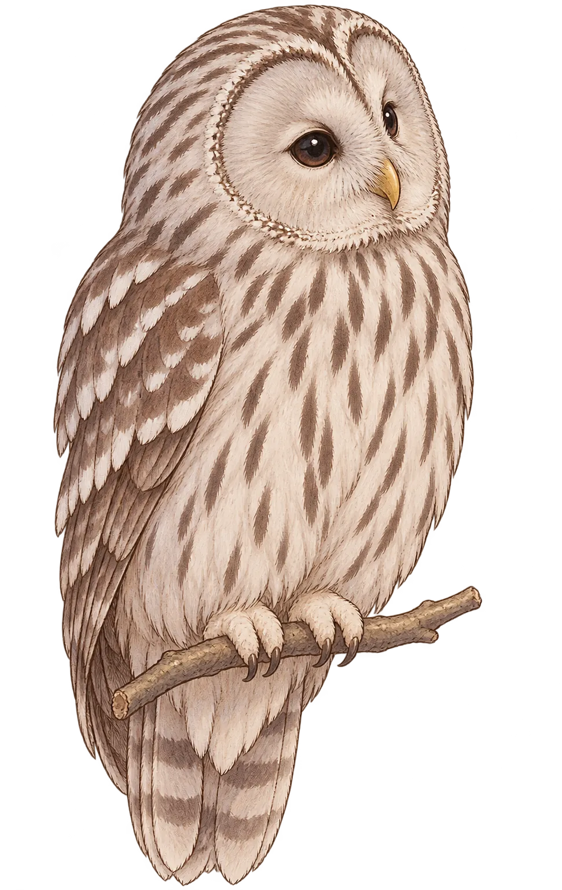

NocturnalFizz
NocturnalFizz Release2026.08.22Lyrics & Music月嶺隼瞳
Release2026.08.22Lyrics & Music月嶺隼瞳
宵の翼
NocturnalFizz
静かな時間はいいものだ今夜はレコードでも聴くか

Aruto Tsukimine
兄・有智は弟のやりたいことをいちばんに応援するタイプ。隼瞳の音楽活動にも積極的に協力し、《夜鶯楼》の店主としても腕を振るう。
兄・有智は弟のやりたいことをいちばんに応援するタイプ。隼瞳の音楽活動にも積極的に協力し、《夜鶯楼》の店主としても腕を振るう。
Release2026.08.22Lyrics & Music月嶺隼瞳
NocturnalFizz

フクロウは首を最大270度回せる稀有な鳥。光の少ない夜でもわずかな音を拾える耳の構造を持ち、《森の哲学者》とも呼ばれます。